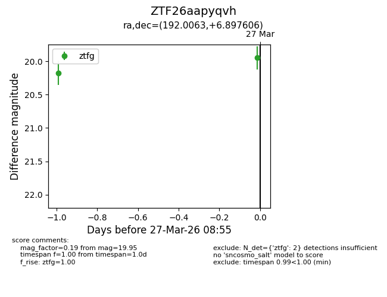
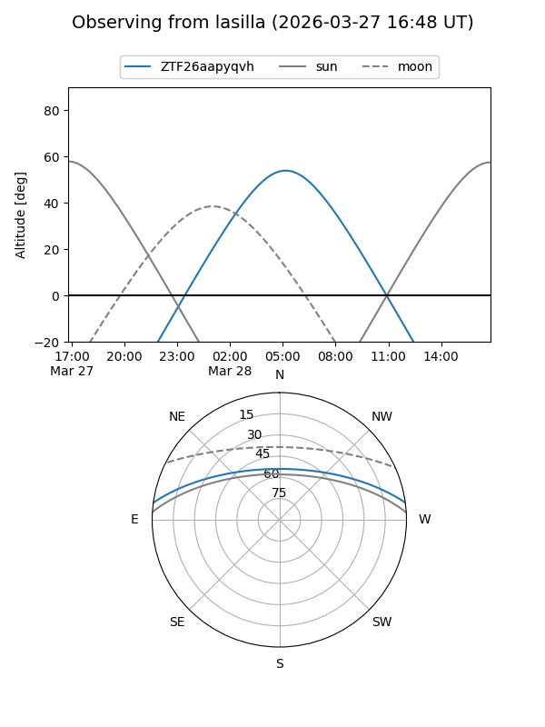
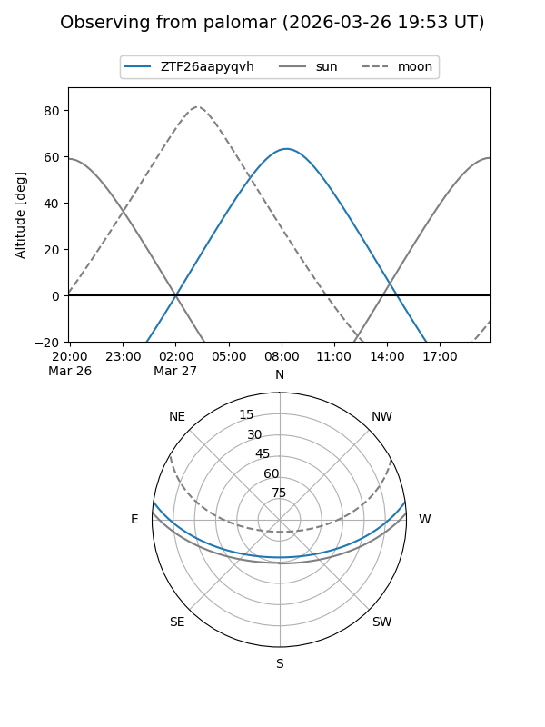
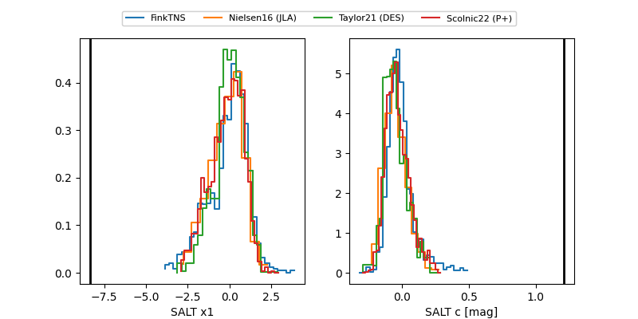

ZTF26aapyqvh
Target ZTF26aapyqvh at 2026-03-27 08:57
Aliases and brokers:
FINK: link
Lasair: link
ALeRCE: link
alt names
ZTF26aapyqvh (ztf,fink_ztf)
Coordinates:
equatorial (ra, dec) = 192.0063,+6.89761
equatorial (HMS+DMS) = 12:48:01.50,+06:53:51.38
galactic (l, b) = (300.4836,+69.75313)
Flags:
Photometry:
last ztfg=19.95
2 ztfg detections
Lightcurve

Visibility


Additional plots
